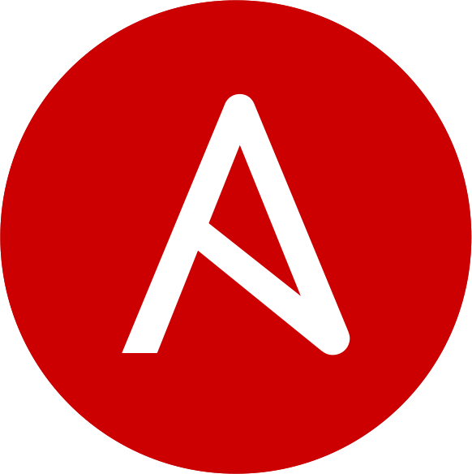
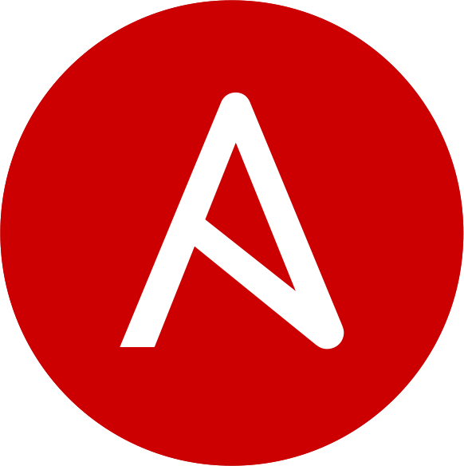

Ansible Hackathon Guide
Use-Case Guide for Computacenter Ansible Hackathon
Copyright © Computacenter Ansible Community 2025
Overview
Herzlich Willkommen zum Ansible Hackathon Vol.1!
Wir wollen mit euch Use-Cases bearbeiten, welche wir auch häufig bei unseren Kunden antreffen und uns dabei insbesondere auf die weniger häufig verwendeten Features der Ansible Automation Platform fokussieren.


Der Hackathon steht im Zeichen eines freundlichen Wettkampfs, zwei Teams treten gegeneinander an und bearbeiten jeweils einen eigenen Use-Case. Letztlich arbeiten aber beide Teams auf ein gemeinsames Ziel hin!
 

Diese Dokumentation dient zum einen der Beschreibung der beiden Use-Cases, als auch zur Dokumentation der Umsetzung.
Demo Umgebung
Hier findet ihr die Links zur Demo-Umgebung:
Warning
ADD LINKS HERE AFTER DEPLOYMENT!
AAP Automatisierung
Zur Automatisierung der Ansible Automation Platform (Controller, EDA, Automation Hub) sind die folgenden Links hilfreich:
- infra.aap_configuration auf Galaxy
- Github Repository für infra.aap_configuration Collection
- Beispiel Template für AAP Configuration as Code
Tip
Verwendet die Certified Collection aus dem Red Hat Automation Hub!
Use-Case 1
EDA mit Netbox, AAP und Openshift
Übersicht
In diesem Use-Case soll mit Event-Driven Ansible auf Events in der Netbox reagiert werden, bei Anlage eines VM Objekts soll automatisiert eine virtuelle Maschine über OpenShift Virtualization im OpenShift Cluster erstellt werden.
Folgende Tools sollen hier bei zum Einsatz kommen:
- Single Source of Truth Netbox
- SCM nach Wahl
- Ansible Automation Platform
- OpenShift / OpenShift Virtualization
- Event-Driven Ansible
- Ansible Navigator
- Ansible Builder v3
- Execution Environment (default oder custom)
Ziel
Die Playbooks befinden sich in einem SCM, der Usecase ist vollautomatisiert (auch alle Konfigurationen in der AAP) und nach Doku Vorgaben zu beschreiben.
Vorgehen
-
Step 1
Es sollen mehrere simple Device Objekte, ohne viel Individualisierung, in der Netbox angelegt werden. Die Anlage, der zu erstellende Objekte, kann durch ein Playbook mit Hilfe der Netbox Collection erfolgen. Zur Orientierung gibt es auf Github vordefinierte Device Types GitHubTip
Man kann alle Objektdaten des Inventory Plugin über ansible-inventory anzeigen.
-
Step 2
Über einen Webhook, aus der Netbox, soll ein Playbook für die Erstellung eines Containers oder VM getriggert werden. -
Step 3
Event-Driven Automation Rulebook erstellen und auf ein beliebiges Event hören z.B. Prozess oder Änderung des Netboxobjekt. Durch das getriggerte Event wird ein Playbook (lokal) oder ein Job/Workflow-Template in der AAP ausgeführt werden. Alles soll nach den Tests über die AAP 2.5 funktionieren.Success
Hier müsst ihr mit dem Team von Use-Case 2 zusammenarbeiten, sie sollen auf der von euch erstellten virtuellen Maschine Konfigurationen durchführen! Erstellt ein gemeinsamen Workflow, das andere Team erstellt unter anderem ein dynamisches Netbox-Inventory.
Links
Einige hilfreiche Tipps findet ihr hier:
Use-Case 1 Dokumentation
TODO
Hier soll eure Dokumentation für den ersten Use-Case entstehen!
Erstellt einen Fork des Projekts (ihr benötigt einen Github Account), fügt eure Dokumentation in der passenden Datei docs/usecase_one/usecase_one_documentation.md hinzu und erstellt anschließend einen Pull Request gegen das originale Repository.
Die Dokumentation ist einfach Markdown, im verwendeten MkDocs Material Theme könnt ihr noch einige zusätzliche Dinge hinterlegen. Schaut in die Doku oder auch in den Contributing Guide dieses Repositories.
Generell sollte die Dokumentation die folgenden Punkte enthalten:
# Title
Brief description of the role, what it does and what not.
## Architecture
Here is a brief overview of the architecture
## Challenges and ToDo's
If anything is missing, add a short description here.
## Installation guide
Description of the installation
## Requirements
Technical requirements, e.g. necessary packages/rpms, own modules or plugins.
## Dependencies
This role expects to run **after** the following roles:
* repository
* networking
* common
* software
## Tool definition 1
Description of the first tool used
## Tool definition 2
Description of the second tool used
## Tool definition 3
Description of the third tool used
## Ansible playbook
### Role Variables
The role uses the following variables:
| Variable Name | Type | Default Value | Description |
| ------------- | ------- | ------------- | ---------------------- |
| example | Boolean | false | Brief description |
### Tags
The role can be executed with the following tags:
* install
* configure
* service
### Example Playbook
Use the role in a playbook like this (after running plays/roles from dependencies section):
```yaml
- name: Execute role
hosts: example_servers
become: true
roles:
- example_role
```
## Authors
Tim Grützmacher - <tim.gruetzmacher@computacenter.com>
Jonathan Schmidt - <jonathan.schmidt@computacenter.com>
Use-Case 2
Netbox-Inventory, Molecule und Ansible-Sign
Übersicht
In diesem Use-Case soll auf virtuellen Maschinen ein Webserver mit der Dokumentation des Hackathons konfiguriert werden. Das Inventory soll dabei dynamisch aus der Netbox bezogen werden. Euer Ansible/Repository-Content soll mit Ansible-Sign signiert sein.
Folgende Tools sollen hier bei zum Einsatz kommen:
- Single Source of Truth Netbox
- SCM nach Wahl
- Ansible Automation Platform
- Ansible Navigator
- Ansible-Sign
- Ansible Builder v3
- Execution Environment (default oder custom)
Ziel
Die Playbooks befinden sich in einem SCM, der Usecase ist vollautomatisiert (auch alle Konfigurationen in der AAP) und nach Doku Vorgaben zu beschreiben.
Vorgehen
-
Step 1
Erstellt ein dynamisches Inventory mit Nexbox als Quelle, alle VM-Objekte des Tenants sollen im Ansible/AAP-Inventory automatisch gesynct werden.Tip
Man kann alle Objektdaten des Inventory Plugin über ansible-inventory anzeigen.
-
Step 2
Das Team aus Use-Case 1 erstellt VM-Instanzen in OpenShift Virtualization, auf diesen VMs sollt ihr automatisiert eine Webserver konfigurieren, welcher die Dokumentation des Projekts anzeigt. Es kann das GitHub Projekt des Hackathon verwendet werden und um die Dokumentation erweitert werden.Success
Bis die VMs bereitstehen, sollt ihr euer Playbook lokal, mithilfe von Molecule entwickeln, nutzt dabei die Beschreibung aus dem Best Practice Guide.
Ein passender Test-Container (UBI8 Init-Container, verhält sich sehr ähnlich zu RHEL8-VM) ist hier zu finden: ghcr.io/timgrt/rhel8-molecule-test-image:mainTipps zum Deployment der Dokumentation
Die folgenden Schritte sind für ein RHEL8-System zu befolgen:
 Webserver-Paket
Webserver-Paket httpdinstallieren
 Git-Paket
Git-Paket gitinstallieren
 Projekt per HTTPS klonen:
Projekt per HTTPS klonen: https://github.com/TimGrt/Ansible-Hackathon.git
 Notwendige Python-Version
Notwendige Python-Version python3.12und Python-Paket-Managerpython3.12-pipinstallieren
 Python-Dependencies
Python-Dependencies requirements.txtdes Projekts installieren (passenden Paketmanager auswählen!)
 MkDocs Projekt bauen:
MkDocs Projekt bauen: python3.12 -m mkdocs build --site-dir /var/www/html
 Webserver starten
Webserver starten Success
Das Playbook soll natürlich idempotent sein!
-
Step 3
Signiert euren Ansible/Repository-Content mitansible-sign. Nur signierter Code soll in der AAP ausführbar sein! Alles soll nach den Tests über die AAP 2.5 funktionieren. -
Step 4
Erstellt eine Pipeline (Github Actions, Gitlab Pipeline, je nach Wahl eures SCM-Backends), welche bei einem Merge in den main-Branch euren Ansible-Content automatisch mit ansible-sign signiert.
Links
Einige hilfreiche Tipps findet ihr hier:
Use-Case 2 Dokumentation
TODO
Hier soll eure Dokumentation für den zweiten Use-Case entstehen!
Erstellt einen Fork des Projekts (ihr benötigt einen Github Account), fügt eure Dokumentation in der passenden Datei docs/usecase_two/usecase_two_documentation.md hinzu und erstellt anschließend einen Pull Request gegen das originale Repository.
Die Dokumentation ist einfach Markdown, im verwendeten MkDocs Material Theme könnt ihr noch einige zusätzliche Dinge hinterlegen. Schaut in die Doku oder auch in den Contributing Guide dieses Repositories.
Generell sollte die Dokumentation die folgenden Punkte enthalten:
# Title
Brief description of the role, what it does and what not.
## Architecture
Here is a brief overview of the architecture
## Challenges and ToDo's
If anything is missing, add a short description here.
## Installation guide
Description of the installation
## Requirements
Technical requirements, e.g. necessary packages/rpms, own modules or plugins.
## Dependencies
This role expects to run **after** the following roles:
* repository
* networking
* common
* software
## Tool definition 1
Description of the first tool used
## Tool definition 2
Description of the second tool used
## Tool definition 3
Description of the third tool used
## Ansible playbook
### Role Variables
The role uses the following variables:
| Variable Name | Type | Default Value | Description |
| ------------- | ------- | ------------- | ---------------------- |
| example | Boolean | false | Brief description |
### Tags
The role can be executed with the following tags:
* install
* configure
* service
### Example Playbook
Use the role in a playbook like this (after running plays/roles from dependencies section):
```yaml
- name: Execute role
hosts: example_servers
become: true
roles:
- example_role
```
## Authors
Tim Grützmacher - <tim.gruetzmacher@computacenter.com>
Jonathan Schmidt - <jonathan.schmidt@computacenter.com>